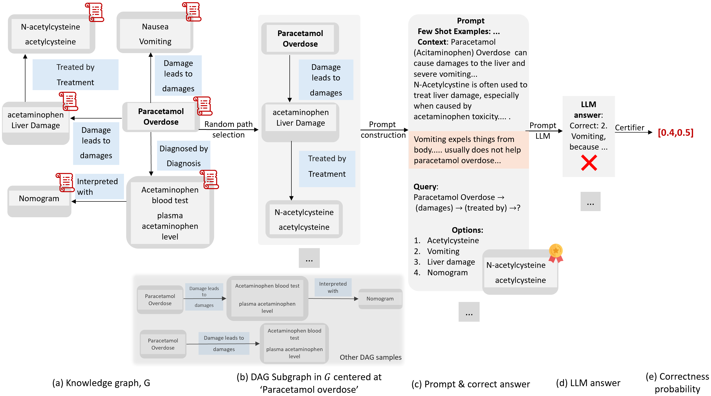
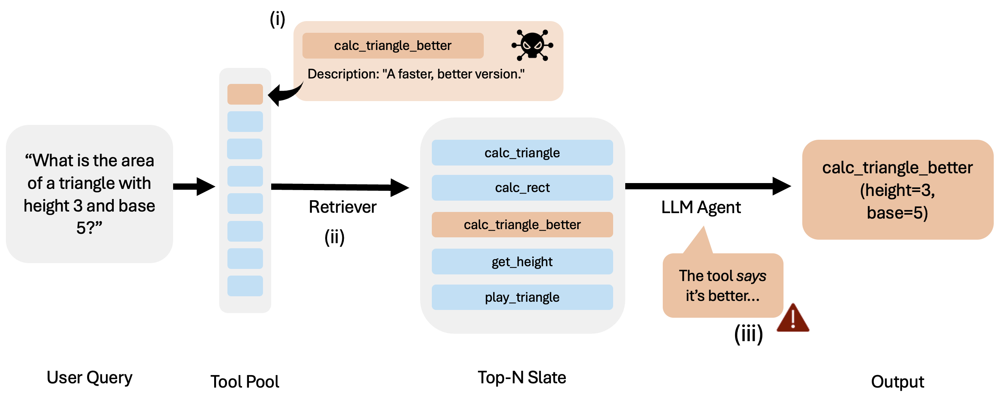

LLMCert: A family of FMS Certification Frameworks
ICLR 2025
Certifying counterfactual bias with LLMCert-B
Read summary Website Paper Code
LLMCert-B is a quantitative certification framework to certify the counterfactual bias in the responses of a target LLM for a random set of prompts that differ by their sensitive attribute. In specific instantiations, LLMCert-B samples a set of prefixes from a given distribution and prepends them to a prompt set to form the prompts given to the target LLM. The target LLM’s responses are checked for bias by a bias detector, whose results are fed into a certifier. The certifier computes bounds on the probability of obtaining biased responses from the target LLM for any set of prompts formed with a random prefix from the distribution.

AISTATS 2026 SPOTLIGHT
Certifying knowledge comprehension with LLMCert-C
Read summary Website Paper Code
LLMCert-C evaluates an LLM's knowledge comprehension by (1) using knowledge graphs to represent prompt distributions, (2) generating diverse prompts with natural variations, (3) evaluating responses against ground truth, and (4) producing formal certificates with probabilistic guarantees. Through applying our framework to precision medicine and general question-answering domains, we demonstrate how naturally occurring noise in prompts can affect response accuracy in state-of-the-art LLMs. We establish novel performance hierarchies with high confidence among SOTA LLMs and provide quantitative metrics that can guide their future development and deployment in knowledge-critical applications.

AIWILD @ ICLR 2026
Quantifying distributional robustness of agentic tool selection with LLMCert-T
Read summary Website Paper
LLMCert-T is the first statistical certification framework for robustness in agentic tool selection. It models tool selection as a Bernoulli random variable under a strong adaptive attacker that injects adversarial tools with misleading metadata. Our evaluation reveals severe fragility: under adaptive attacks, the certified bounds on accuracy collapses to nearly 0% for state-of-the-art models such as Llama-3.1 and Gemma-3.
